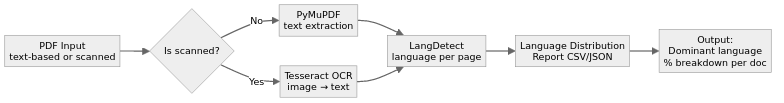

Language Processing Tool
PDF language detection & document clustering — published on PyPI
- Published on PyPI — v0.2.7
- Tesseract OCR + LangDetect
- CLI & Python API
- VGG16 / ResNet clustering (internal)
A Python package that processes PDFs — text-based and scanned — to detect languages and provide per-document language distribution breakdowns. Publicly available on PyPI. The advanced internal version for FactEntry adds deep-learning document clustering (VGG16, ResNet, PCA) and LLaMA Vision for enhanced image analysis and content grouping.
What it does
The Language Processing Tool is a pip-installable Python package that extracts text from PDFs (both native-text and scanned/image-based) and identifies the dominant language with a per-page percentage breakdown — for example: 60% English, 30% Spanish, 10% French. Batch mode processes entire folders of PDFs from a CSV file list. The package ships a CLI entry point for terminal use and a Python API for scripted pipelines.
language-processing-tool on PyPIFeatures
- Text extraction: Handles both text-based PDFs (PyMuPDF) and scanned/image PDFs (Tesseract OCR).
- Language detection: Detects dominant language per document and provides a full % distribution breakdown.
- Batch processing: Process hundreds of PDFs from an input folder using a CSV file listing filenames.
- CLI entry point:
process-pdfscommand available after pip install. - Python API:
process_single_file()andprocess_pdfs()for scripted use.
Project structure
Dependencies
| Package | Purpose |
|---|---|
pytesseract | OCR — extract text from image-based / scanned PDF pages |
langdetect | Language identification from extracted text |
PyMuPDF (fitz) | Fast text extraction from native-text PDFs |
pandas | CSV handling for batch processing input/output |
Pillow | Image preprocessing for Tesseract OCR |
icecream | Debug-friendly logging |
Processing pipeline
Each PDF follows a decision-based path — native text PDFs go straight to LangDetect, scanned PDFs pass through Tesseract OCR first.

Full pipeline: input PDF → detect if scanned → OCR or direct text extract → LangDetect → language distribution report
Step-by-step
- 1. Input: Single PDF path or a folder + CSV listing filenames.
- 2. PDF type check: If pages contain embedded text, PyMuPDF extracts it directly. If pages are image-only (scanned), Tesseract OCR is invoked.
- 3. Language detection: LangDetect analyses the extracted text per page, building a frequency map across all pages.
- 4. Output: Returns (or writes) a language distribution report — dominant language + percentage breakdown (e.g., 60% en, 30% es, 10% fr).
- 5. Batch mode: Iterates over all filenames from the CSV, processes each PDF, and aggregates results into an output CSV.
Installation
Python API
CLI usage
CSV format (batch mode)
Advanced internal version — FactEntry
Beyond the public PyPI release, an advanced internal version was built for FactEntry Data Solutions. It adds deep-learning-based document layout clustering and LLM-assisted image analysis for production-scale financial document processing.
Document layout clustering
- VGG16 & ResNet: Pre-trained CNN backbones used to extract visual layout features from document page images.
- PCA-based fine-tuning: Principal Component Analysis reduces feature dimensionality before clustering, improving separation quality.
- Document classification: Groups financial documents by layout type (forms, tables, free-text, mixed) for downstream processing specialisation.
LLaMA Vision integration
- Enhanced image analysis: LLaMA Vision model processes complex page images — borderless tables, handwritten annotations, stamp overlays.
- Document ranking: Pages scored by content density and structural complexity for priority extraction.
- Content grouping: Related document sections identified and grouped across multi-page PDFs.
OCR + deep learning pipeline
- Tesseract OCR (with OpenCV preprocessing) → structured text extraction from scanned financials.
- LayoutLM (HuggingFace) for documents with complex layouts — borderless tables and unstructured forms.
- Combined pipeline: language detect → layout cluster → LLaMA Vision analysis → ranked extraction output.
PyPI publication

language-processing-tool v0.2.7 live on PyPI — pip install language-processing-tool
Package metadata
| Package name | language-processing-tool |
| Version | 0.2.7 |
| Python | ≥ 3.6 |
| License | MIT |
| CLI command | process-pdfs |
| Author | Harish Kumar S |